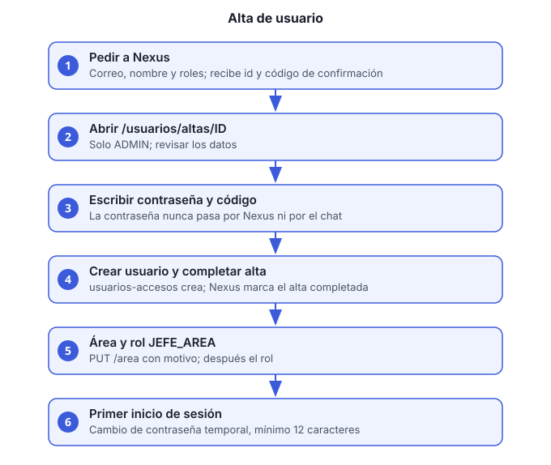

Objetivo: crear un usuario nuevo con su rol, su contraseña temporal y, si aplica, su área.
Quién puede hacerlo: solo un usuario con rol
ADMIN.

Principio de seguridad
La contraseña nunca pasa por el asistente. Nexus
prepara el alta y genera un código de confirmación. La contraseña
temporal la escribes tú en la interfaz (ui-ms), en un campo
de tipo contraseña. Nexus, el chat y el historial no la reciben.
Antes de empezar
- Usuario con rol
ADMIN. - Correo del nuevo usuario y su nombre completo.
- Una contraseña temporal que definas tú. Se la das al usuario por un canal seguro; él la cambia en su primer inicio de sesión.
- Los roles que vas a asignar. Los permitidos en un alta son:
ADMIN,FINANZAS,CONTADOR,VENTAS,COMPRAS,ALMACEN,OPERACIONES,CALIDAD,DIRECCIONyLEGAL.JEFE_AREAno se asigna en el alta: ver el paso 6.
Pasos
Pide la preparación a Nexus en el chat o desde tu cliente MCP. Indica el correo, el nombre completo y los roles:
Da de alta a ana@empresa.com, Ana López, con el rol VENTAS.
Nexus valida el correo y los roles, y responde con el id del alta, un código de confirmación de 8 dígitos y el enlace
/usuarios/altas/ID. Ese código es de un solo uso y tiene vigencia.Abre el enlace en la interfaz:
http://HOST:8098/usuarios/altas/ID. Solo un administrador puede abrirlo.Revisa los datos del alta. La página muestra correo, nombre y roles. Si algo no es correcto, no la completes: vuelve al paso 1 con los datos corregidos.
Escribe la contraseña temporal y el código de confirmación, y envía el formulario.
La interfaz sigue este orden:
- Pide a Nexus los datos del alta.
- Verifica el código con Nexus.
- Crea el usuario en
usuarios-accesos-ms. - Marca el alta como completada en Nexus.
Si la creación falla, el alta sigue pendiente y puedes reintentar. Si falla después de crear el usuario, la página te lo indica: no repitas la creación; revisa la lista de usuarios.
Confirma que el usuario existe. Pide la lista a Nexus (
listar_usuarios) o consulta el servicio. Anota el id del usuario; lo necesitas para el área.Asigna el área, si aplica. Solo con token de
ADMIN. El motivo es obligatorio:curl -s -X PUT http://HOST/usuarios-accesos-ms/v1/usuarios/USUARIO_ID/area \ -H "Authorization: Bearer ACCESS_TOKEN" \ -H "Content-Type: application/json" \ -d '{"area":"VENTAS_ATENCION_CLIENTES","motivo":"Alta de nuevo ingreso"}'Las áreas válidas son las del enum de reportes:
VENTAS_ATENCION_CLIENTES,FINANZAS_CONTABILIDAD,OPERACIONES,COMPRAS_PROVEEDORES,ADMINISTRACION_LEGALyDIRECCION_GENERAL. Un valor desconocido responde 422.Asigna
JEFE_AREA, si aplica. Este rol exige área. El orden es obligatorio: primero el área (paso 6), después el rol. Si intentas asignar el rol sin área, responde 422.Entrega la contraseña temporal al usuario por un canal seguro.
El usuario cambia la contraseña en su primer inicio de sesión. Mientras la contraseña sea temporal, el login responde 403
cambio-password-requerido. Para cambiarla:curl -s -X POST http://HOST/usuarios-accesos-ms/v1/auth/cambiar-password-inicial \ -H "Content-Type: application/json" \ -d '{"correo":"ana@empresa.com","passwordActual":"TEMPORAL","passwordNueva":"NUEVA_DE_12_O_MAS"}'La contraseña nueva debe tener al menos 12 caracteres. La respuesta es 204.
Verificación
listar_usuariosmuestra al usuario con sus roles.- El usuario puede iniciar sesión después de cambiar la contraseña.
- Si tiene área, el token incluye el claim
areadespués de iniciar sesión de nuevo. Un usuario con sesión abierta antes del cambio no lo trae hasta volver a entrar.
Problemas comunes
| Síntoma | Causa | Qué hacer |
|---|---|---|
El alta no existe |
Expiró o ya se completó | Prepara un alta nueva |
| El código no coincide | Se escribió mal o es de otra alta | Revisa el código de la respuesta de Nexus. Un código incorrecto cancela el alta: hay que prepararla de nuevo |
422 al asignar JEFE_AREA |
No tiene área | Asigna el área primero (paso 6) |
403 cambio-password-requerido |
Contraseña temporal sin cambiar | Completa el paso 9 |
| Reportes responde 403 al usuario | El área no coincide con el enum de reportes | Corrige el área con el paso 6 |